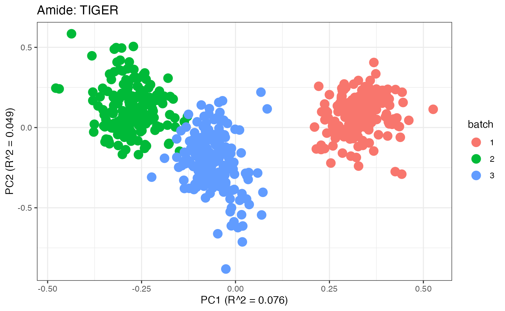
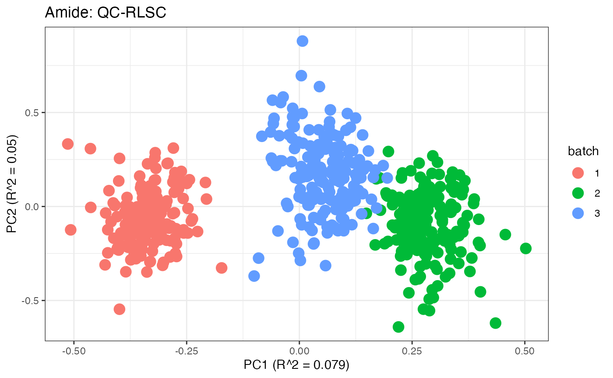
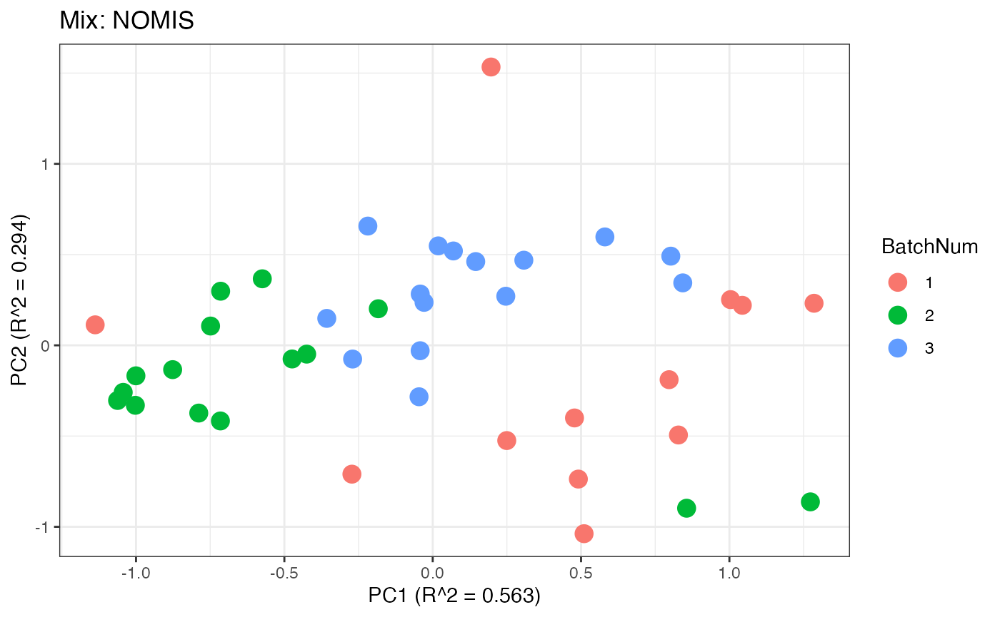
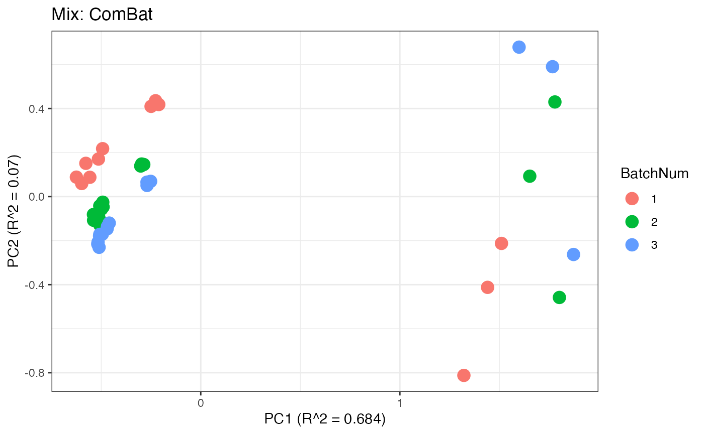

malbacR: A Vignette Pertaining to Pre-Filtered Data
Damon Leach, Kelly Stratton, Lisa Bramer
2023-10-18
malbacR_vignette_condensed_filtered.RmdThe R package malbacR is a new package that deals with
batch correction methods of small molecule omics data. It works in
conjunction with pmartR, an R package designed for
preprocessing, filtering, and analyzing multi-omics data (Stratton et al. 2019; Degnan et al. 2023).
This outline demonstrates the functionality and use of the
malbacR package. Within this package, there are four data
sets: pmart_amide,
pmart_amideFilt,pmart_mix, and
pmart_mixFilt. The first two objects contain data
originally found in the package WaveICA2.0 (Deng and Li 2022). The second two objects
contain data originally found in the package crmn (Redestig et al. 2009). The data sets with the
suffix “Filt” are filtered versions of the original data sets. That is,
unlike their non-filtered counterparts, these data objects require no
additional data manipulation for batch correction to successfully run.
For this example, we work with the filtered data sets to demonstrate how
the malbacR functions work.
Within malbacR there are 11 batch correction
methods:
- Range Scaling (Berg et al. 2006)
- Power Scaling (Berg et al. 2006)
- Pareto Scaling (Berg et al. 2006)
- ComBat (Müller et al. 2016)
- EigenMS (Karpievitch et al. 2014)
- NOMIS (Sysi-Aho et al. 2007)
- RUV-random (De Livera et al. 2015)
- QC-RLSC (Dunn et al. 2011)
- WaveICA2.0 (Deng et al. 2019)
- TIGER (Han et al. 2022)
- SERRF (Fan et al. 2019)
Data Set 1: Amide Data
Load in the Data
A pmartR friendly version of the “Amide” data that has
already undergone filtering and log2 transformations is already
implemented within malbacR. Therefore, we simply load in
the data.
data(pmart_amideFilt)Run Batch Correction Methods
The “Amide” data set contains information regarding quality control samples. Therefore the following methods can be used:
- Range Scaling
- Power Scaling
- Pareto Scaling
- TIGER
- EigenMS
- WaveICA2.0
- SERRF
- ComBat
It is important to note that the data pmart_amideFilt
has been filtered, transformed, and imputed such that the data runs with
all possible methods, but it may be conservative for a given method. For
example, some methods do not require imputation to run, but because some
methods require imputation (like SERRF and WaveICA2.0) (Fan et al. 2019; Deng et al. 2019), the data
has been imputed.
# SCALING METHODS
# range scaling
amide_range <- bc_range(omicsData = pmart_amideFilt)
# power scaling
amide_power <- bc_power(omicsData = pmart_amideFilt)
# pareto scaling
amide_pareto <- bc_pareto(omicsData = pmart_amideFilt)
# QUALITY CONTROL METHODS
# TIGER
amide_tiger <- bc_tiger(omicsData = pmart_amideFilt,sampletype_cname = "group",
test_val = "QC",injection_cname = "Injection_order")
# QC-RLSC
amide_qcrlsc <- bc_qcrlsc(omicsData = pmart_amideFilt,block_cname = "batch",
qc_cname = "group", qc_val = "QC", order_cname = "Injection_order",
missing_thresh = 0.5, rsd_thresh = 0.3, backtransform = FALSE)
# SERRF
amide_serrf <- bc_serrf(omicsData = pmart_amideFilt,sampletype_cname = "group",test_val = "QC")
# OTHER METHODS
# ComBat
amide_combat <- bc_combat(omicsData = pmart_amideFilt, use_groups = FALSE)
# EigenMS
amide_eigen <- bc_eigenMS(omicsData = pmart_amideFilt)
# WaveICA2.0
amide_wave <- bc_waveica(omicsData = pmart_amideFilt, injection_cname = "Injection_order",
alpha = 0, cutoff = 0.1, K = 10)Data Visualization
After obtaining all the different batch corrected data sets, we can
plot the PPCA to see if they are successfully returning batch corrected
data. We set the group_designation to use our batch
information as the main_effects so as to color the data by
batch. All of this code is run using functions from pmartR
demonstrating the utility between the two packages.
pmart_amide <- group_designation(pmart_amideFilt,main_effects = "batch")
amide_range <- group_designation(amide_range,main_effects = "batch")
amide_power <- group_designation(amide_power,main_effects = "batch")
amide_pareto <- group_designation(amide_pareto,main_effects = "batch")
amide_tiger <- group_designation(amide_tiger,main_effects = "batch")
amide_qcrlsc <- group_designation(amide_qcrlsc,main_effects = "batch")
amide_combat <- group_designation(amide_combat,main_effects = "batch")
amide_wave <- group_designation(amide_wave,main_effects = "batch")
amide_serrf <- group_designation(amide_serrf,main_effects = "batch")
p1 <- plot(dim_reduction(omicsData = pmart_amide))+ scale_colour_discrete(name="Batch") + labs(title = "Amide: Unadjusted")
p2 <- plot(dim_reduction(omicsData = amide_range))+ scale_colour_discrete(name="Batch") + labs(title = "Amide: Range")
p3 <- plot(dim_reduction(omicsData = amide_power))+ scale_colour_discrete(name="Batch") + labs(title = "Amide: Power")
p4 <- plot(dim_reduction(omicsData = amide_pareto))+ scale_colour_discrete(name="Batch") + labs(title = "Amide: Pareto")
p5 <- plot(dim_reduction(omicsData = amide_tiger))+ scale_colour_discrete(name="Batch") + labs(title = "Amide: TIGER")
p6 <- plot(dim_reduction(omicsData = amide_qcrlsc))+ scale_colour_discrete(name="Batch") + labs(title = "Amide: QC-RLSC")
p7 <- plot(dim_reduction(omicsData = amide_combat))+ scale_colour_discrete(name="Batch") + labs(title = "Amide: ComBat")
p8 <- plot(dim_reduction(omicsData = amide_wave))+ scale_colour_discrete(name="Batch") + labs(title = "Amide: WaveICA2.0")
p9 <- plot(dim_reduction(omicsData = amide_serrf))+ scale_colour_discrete(name="Batch") + labs(title = "Amide: SERRF")
p1;p2;p3;p4;p5;p6;p7;p8;p9
Data Set 2: Mix Data
Load in the Data
The malbacR package includes another pmartR
friendly data set for the “mix” data which has already undergone
filtering and log2 transformations is already implemented within
malbacR. Therefore, we simply load in the data.
data(pmart_mixFilt)Run Batch Correction Methods
The “mix” data set contains information regarding negative controls/internal standards. Therefore the following methods can be used:
- Range Scaling
- Power Scaling
- Pareto Scaling
- RUV-random
- NOMIS
- ComBat
As there is no information regarding QC samples or injection order, the other batch correction methods in the package or not able to be used with this data set.
As with the pmart_amideFilt data set, is important to
note that the data in pmart_mixFilt has been filtered and
transformed such that the data runs with all possible methods, but it
may be conservative for a given method. As there were no missing data
with the “mix” data set, no imputation was computed.
# SCALING METHODS
# range scaling
mix_range <- bc_range(omicsData = pmart_mixFilt)
# pareto scaling
mix_pareto <- bc_pareto(omicsData = pmart_mixFilt)
# power scaling
mix_power <- bc_power(omicsData = pmart_mixFilt)
# INTERNAL STANDARDS/NEGATIVE CONTROLS
# RUV-random
mix_ruv <- bc_ruvRandom(omicsData = pmart_mixFilt, nc_cname = "tag",nc_val = "IS", k = 3)
# NOMIS
mix_nomis <- bc_nomis(omicsData = pmart_mixFilt, is_cname = "tag", is_val = "IS", num_pc = 2)
# OTHER METHODS
mix_combat <- bc_combat(omicsData = pmart_mixFilt)Mix: Data Visualization
Similar to the previous data set, we can compare the PCA plots between the unadjusted and adjusted data sets.
pmart_mix <- group_designation(pmart_mixFilt,main_effects = "BatchNum")
mix_range <- group_designation(mix_range,main_effects = "BatchNum")
mix_power <- group_designation(mix_power,main_effects = "BatchNum")
mix_pareto <- group_designation(mix_pareto,main_effects = "BatchNum")
mix_combat <- group_designation(mix_combat,main_effects = "BatchNum")
mix_ruv <- group_designation(mix_ruv,main_effects = "BatchNum")
mix_nomis <- group_designation(mix_nomis,main_effects = "BatchNum")
p1 <- plot(dim_reduction(omicsData = pmart_mix)) + scale_colour_discrete(name="Batch") + labs(title = "Mix: Unadjusted")
p2 <- plot(dim_reduction(omicsData = mix_ruv)) + scale_colour_discrete(name="Batch") + labs(title = "Mix: RUV-random")
p3 <- plot(dim_reduction(omicsData = mix_nomis)) + scale_colour_discrete(name="Batch") + labs(title = "Mix: NOMIS")
p4 <- plot(dim_reduction(omicsData = mix_combat)) + scale_colour_discrete(name="Batch") + labs(title = "Mix: ComBat")
p5 <- plot(dim_reduction(omicsData = mix_range)) + scale_colour_discrete(name="Batch") + labs(title = "Mix: Range")
p6 <- plot(dim_reduction(omicsData = mix_power)) + scale_colour_discrete(name="Batch") + labs(title = "Mix: Power")
p7 <- plot(dim_reduction(omicsData = mix_pareto)) + scale_colour_discrete(name="Batch") + labs(title = "Mix: Pareto")
p1;p2;p3;p4;p5;p6;p7